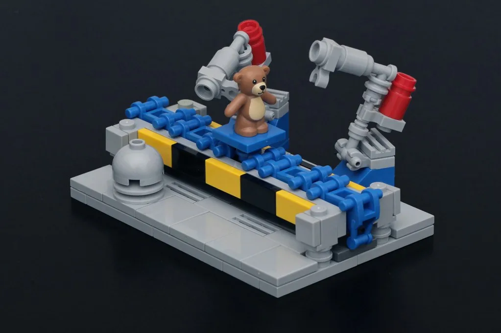
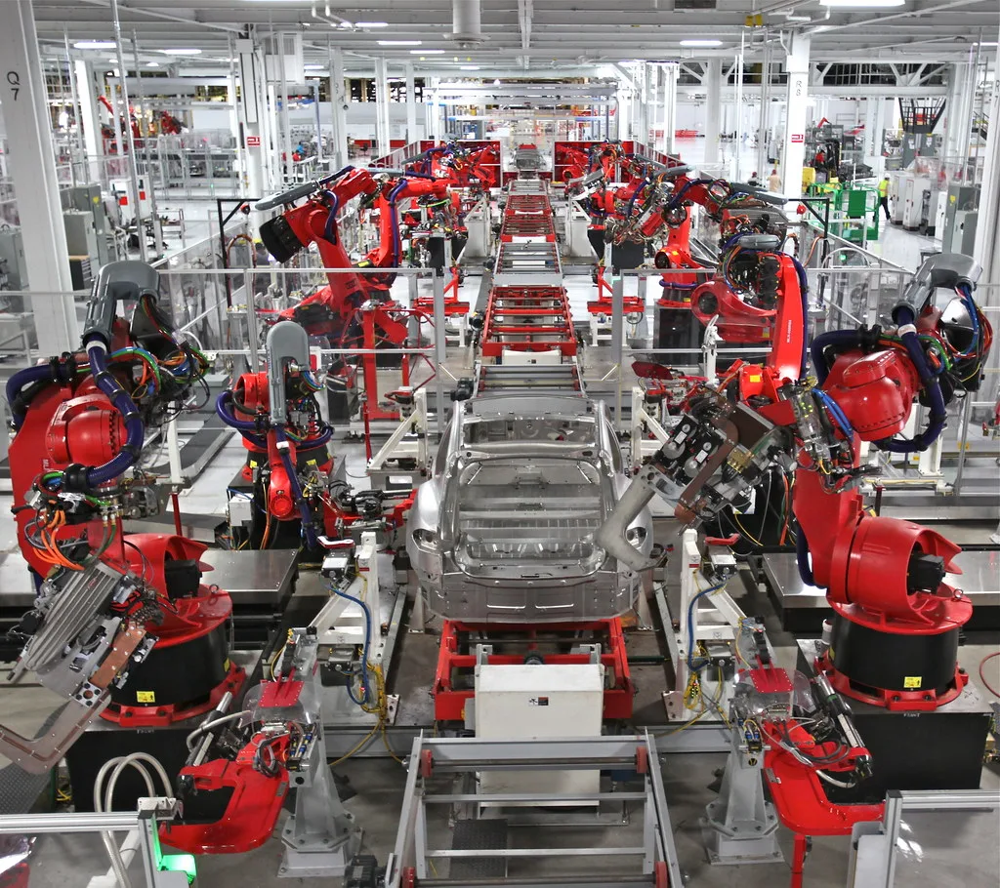

AW 2026, 스마트팩토리·로보틱스 기술 총출동
제36회 스마트공장·자동화산업전(Automation World 2026, AW 2026)이 열리면서 국내외 산업 자동화 기술의 현주소를 한눈에 볼 수 있는 무대가 펼쳐졌다. 로보틱스, 산업용 소프트웨어, 물류 자동화, 머신 비전, 제어 기술 등 제조 현장의 핵심 기술들이 총출동했으며, 참가 기업들은 저마다의 신기술과 적용 사례를 앞다퉈 선보였다.
이번 전시의 가장 큰 특징으로는 개별 기술의 나열이 아니라 '통합'이 꼽힌다. 과거 전시들이 로봇 팔이나 센서 같은 단품 기술을 보여주는 데 집중했다면, 올해는 로보틱스·소프트웨어·물류·비전·제어가 하나의 운영 체계로 묶여 실제 공장처럼 유기적으로 작동하는 모습을 시연하는 부스가 늘었다. 제조 현장의 디지털 전환이 단위 기술 도입 단계를 지나 시스템 통합 단계로 넘어가고 있음을 보여주는 대목이다.

대기업과 글로벌 기업의 협업 사례도 눈길을 끌었다. 시스코와 효성중공업은 디지털 변전소의 핵심 기술을 공동으로 검증하며 글로벌 전력망 시장 공략에 나선다는 계획을 공개했다. 전력 인프라의 디지털화는 인공지능(AI) 데이터센터 확산으로 전력 수요가 급증하는 상황과 맞물려 성장성이 큰 분야로 주목받고 있다.
로봇의 활용 무대가 공장 담장을 넘어서는 흐름도 확인됐다. 하이퍼쉘 등 웨어러블 로봇 기업들은 등산이나 야외 활동에서 착용자의 근력을 보조하는 아웃도어 로봇을 선보이며 로봇 대중화에 속도를 내고 있다. 산업 현장용 기술로 출발한 로보틱스가 일상 소비자 시장으로 빠르게 확장되고 있는 것이다.

업계에서는 이번 전시가 국내 제조업의 체질 전환을 가늠하는 자리였다는 평가가 나온다. 인구 감소로 생산 인력 확보가 갈수록 어려워지는 상황에서, 자동화와 지능화는 선택이 아닌 생존의 문제가 되고 있기 때문이다. 특히 중소 제조기업까지 스마트팩토리 전환의 흐름에 올라탈 수 있도록 비용 부담을 낮춘 솔루션들이 다수 소개된 점이 고무적이라는 반응이다.
전문가들은 AI와 로보틱스의 결합이 앞으로 제조 현장의 풍경을 근본적으로 바꿀 것으로 전망한다. 스스로 학습하고 판단하는 로봇이 늘어날수록 공장 운영의 효율은 높아지고, 사람은 더 창의적인 업무로 옮겨가는 방향의 변화가 가속화될 것이라는 관측이다.